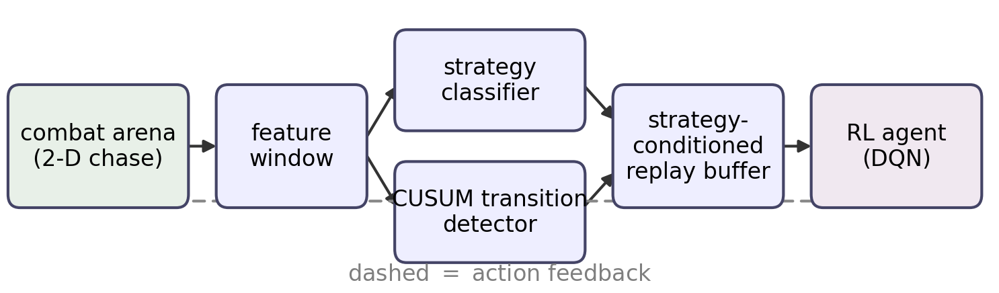
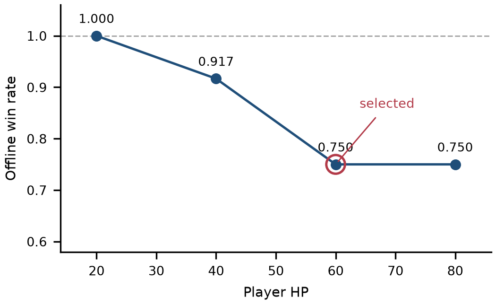
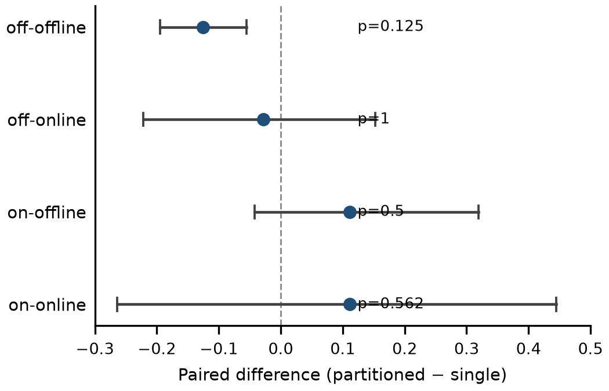
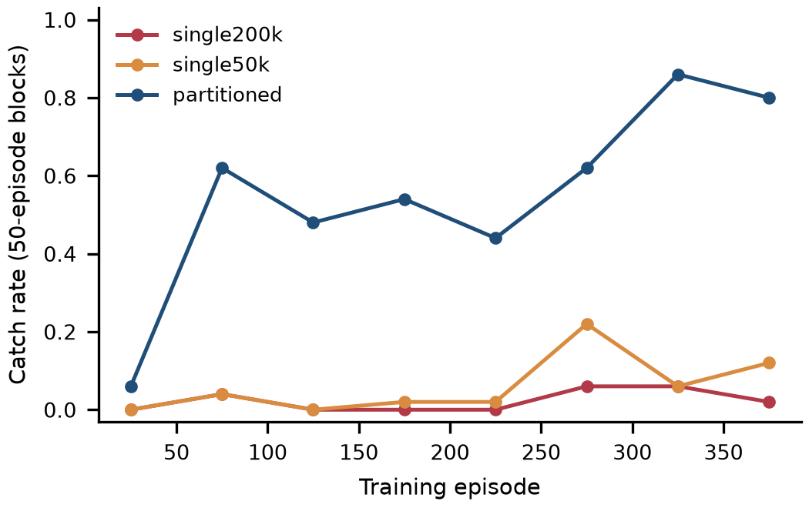

Non-player characters (NPCs) make a game world feel inhabited, yet most are driven by hand-written rule tables or finite-state machines: deterministic controllers a player soon learns to predict and exploit [1]. Reinforcement learning (RL) replaces those rules with behaviour learned from interaction [2]–[4].
We call this the strategy-transition problem: infer which style the player uses now from delayed, noisy telemetry, detect when it changes, and adjust play quickly.
Experience replay [4], [5] is the standard reuse mechanism in deep RL, but a uniform buffer mixes experience from every strategy and time period, which motivates the strategy-conditioned partitioned replay we audit: tag every transition with the active strategy, store it in that strategy’s partition, and sample preferentially from the partition matching the currently detected strategy, damped by a parameter-similarity prior. Earlier work by the present authors (no citable venue) reported the scheme lifts adaptive win rate from 0.708 to 0.958 in the most demanding condition (labels withheld), with unchanged adaptation time; we audit that claim here. The audited system is re-specified in Section III rather than cited.
This paper audits that result and reports that it does not survive. The defects that make such results fragile—an unreproducible baseline, a saturated task, an evaluation horizon the episodes never reach, a classifier calibrated to the wrong opponent—recur across game-AI RL evaluations and are detectable from published artifacts alone; an undetected defect also wastes the re-training it triggers, making reproducible evaluation a sustainability practice [18], [25]–[27].
Contribution 1: a specified system. We design and release a testbed for mid-encounter strategy adaptation: a symmetric combat environment with domain-randomized personalities, a temporal strategy classifier, a confirm-gated change detector, and a replay memory partitioning transitions by the active strategy with a parameter-similarity sampling prior; its reported benefit is not established.
Contribution 2: an audit of what the system can support. The originally claimed +0.25 is not recovered from the surviving checkpoints (Δ=+0.18), and the single-buffer baseline is not reproducible from a fixed checkpoint: its sampling indices shared an environment RNG stream, so five repeats of one checkpoint span a win-rate range of 0.75 while the partitioned arm is exactly reproducible. Under the rebuilt protocol (explicit seeding, per-episode records) the 36-cell grid at six paired seeds shows no benefit at a calibrated difficulty: offline −0.125 (exact p=0.125), online −0.028 (p=1.000), median paired difference +0.042. Four further transferable defects, each measured rather than asserted, follow in Section V, with a reporting checklist to close.
Rule-based NPCs are deterministic and exploitable, motivating learned controllers [1], [2]; constrained RL specifies behaviour directly [3], Unity is a common platform [9], and adaptation has been pursued through companion learning [7], policies for changing design parameters [10], Unity ML-Agents NPCs [8], human-strategy learning [14], and multi-agent experience sharing [12], [13]; none of these focuses on mid-encounter change. Dynamic difficulty adjustment adapts challenge to player skill [11]; we study the harder case: the target behaviour is unknown, changes without warning, and must be inferred from dynamics alone. Prioritized [15] and hindsight [16] replay reweight experience by novelty or goal relevance; our partitioned memory is a regime-indexed middle ground. CUSUM [6] underlies our two-stage detector. Reproducibility problems in RL are well documented [18], [19]; reported progress is sensitive to seeds and code details [20], and benchmark comparisons need variance-aware intervals [21]–[23]. Value-based agents are prone to instability and overestimation [17], [24], so we inspect the critic’s internal scale and report a negative result with a reusable checklist.
This section specifies our system.
We use a symmetric combat arena, 20 × 20 units, in which the NPC wins by reducing the player’s health to zero while keeping its own above zero (Δt = 0.1 s, episodes capped at 400 steps). The action space is |A| = 18 (nine movement intents × {move, attack}) and the base observation is 14-dimensional (relative pose, closing rate, healths, cooldowns, speeds, swing-in-range). cond-on appends a 4-dimensional one-hot of the active strategy label; cond-off withholds it, so the agent must infer the strategy from dynamics. Combat is melee: a hit within attack_range=1.6 inside a 70° half-angle cone deals 2 damage, one hit-stun step, on a 4-step cooldown (contact below 0.5 units ignores the cone). Each actor has 20 HP as shipped; Section IV raises only the player’s to 60—the rationale that 20 HP makes a mid-episode switch observable is contradicted by measurement (Finding F6).
A strategy is an 8-tuple (aggression, retreat rate, evasion distance, speed, engagement distance, attack frequency, attack range, low-health retreat threshold). Four canonical personalities—aggressive, defensive, evasive, and balanced—are defined, and each episode’s parameters are perturbed by multiplicative domain randomization (±20%).
Temporal strategy classifier. Each step contributes 10 telemetry features over a sliding window of W=15 steps, fed to a temporal MLP (two 64-unit ReLU layers; 8-window context; 4-class softmax) trained on 29,920 windows (7,480 per strategy) synthesized against a random-walk opponent.
Confirm-gated CUSUM detector. A two-stage CUSUM runs on a binary change indicator It = [ŷyt ≠ ŷyseg] with statistic St = max(0, St−1 + It − k), where k=0.5, alarm threshold h=6.0, and minimum segment length 10 steps; when St ≥ h a candidate change is armed and confirmed if the new label persists confirm=10 steps. Classifier scores are exponentially smoothed (α=0.2) before the argmax, and the statistic decays to zero when the label is stable.
Implementation note. In the audited code the confirmation stage gates nothing: the confirmed label filters no training labels, chooses no partition, and triggers no reprioritization—transitions are routed by the smoothed argmax label at insertion time.
Each transition (o, a, r, o′, d) is inserted into the partition indexed by the active strategy label. At sampling time, with batch size B and detected strategy c, partition j receives weight wj(c)=1 if j=c, δspcj if j≠c and |Pj|>0, and 0 if |Pj|=0, where scj is the cosine similarity of the canonical strategy parameters, δ=0.5 the stale-decay floor, and p=1.6 the prior power; the buffer normalizes the weights, draws (n1, …, n4) ∼ Multinomial(B, p1, …, p4), and samples min(nj, |Pj|) from each partition, topping up from the current one.
The NPC is a Double DQN [17] (two 128-unit hidden layers; Adam η=5×10−4, gradient-norm clipped at 10; γ=0.99; soft target τ=0.005 with a 500-step hard sync; batches of 256 every 2 steps; ε=0.4 → 0.02 over 15,000 steps), pre-filled with 30 expert demonstrations per strategy. Rewards: +150 (kill), −50 (death), ±8 per hit, +0.6 heading, +1.2 per unit closure, +1.0 in range, −0.005 per step.
Training runs 400 episodes under a within-episode-switch protocol: each episode starts under one personality and switches once to its pairwise partner (aggressive↔defensive, evasive↔balanced), so the policy must track a transition. The switch is at switch_step=100 originally, switch_step=40 in our corrected protocol (Section IV).

The audit began from the original repository. The per-episode evaluation records had been discarded, and the legacy run naming scheme encoded neither the conditioning flag nor the episode count, so distinct configurations overwrote one another’s checkpoints: the original ground-truth/cond-on and all detector-labelled checkpoints are unrecoverable. With no source-control history we cannot say which revision produced any surviving number, so the checkpoints are treated as candidates, re-evaluated under an explicit protocol rather than assumed provenance. The released artifact therefore separates three provenance classes: corrected-grid results reproduced from retained checkpoints and logs; archival results retained as records; and printed-only values, chiefly Table I, whose per-repeat logs no longer exist. The timestamped pre-registration file was not retained; the fixed protocol is reconstructed from the frozen run configs in the artifact.
Six infrastructure changes were required before any new number could be trusted.
Explicit seeding. Python, NumPy, and PyTorch RNGs are seeded per run; the single-buffer implementation had drawn sampling indices from the global environment stream and now has a dedicated one; determinism is verified by exact reproduction of training curves and statistics.
Collision-free run naming. Every run’s tag encodes replay variant, label source, conditioning flag, episode count, seed, and a UTC timestamp.
Per-episode records. Every evaluation episode is written to disk with its win/loss outcome, length, adaptation status, and detected-transition count; aggregate-only reporting is what allowed the original result to be misread.
A corrected adaptation metric. The original metric is silent about episodes ending before the switch—at the original setting the majority of them (F6). We set the switch to step 40, which 863 of 864 evaluation episodes reach, and report four mutually exclusive statuses—ok, censored, no-post, short-base—averaging only ok and censored and reporting the excluded counts, following the preference for standard reproductions over novel variants.
Corrected switch schedule. The paper specifies pairwise partners, but the audited code cycled through a four-strategy ring. The rerun uses the specified pairwise schedule; the archived four-cycle run is retained for provenance because the difference changes F5 (Section V-E).
Corrected exact test. The sign-flip Wilcoxon enumeration formed a signed sum of ranks rather than the positive-rank sum, which inflated p-values. The corrected test uses the positive-rank sum; every Table II p-value and Holm-adjusted value was recomputed from the per-seed records.
Protocol delta. Relative to the submitted run, the deciding protocol changes the switch schedule from a four-cycle ring to pairwise partners, the replay seed offset from +11 to 0, player HP from 20 to 60, the switch step from 100 to 40, and the exact test from a signed-rank sum to a positive-rank sum; per-run seeding, collision-free naming, and per-episode logging are the supporting infrastructure. The HP selection rule and the full calibration sweep are reported in Section IV-D; no other outcome-dependent tuning was applied.
The protocol for the deciding run was fixed in the released protocol record before launch and amended only in the open; the original timestamped pre-registration file was not retained. The design is a 36-cell grid: two conditions (ground-truth labels, conditioned on/off) × three replay arms (single buffer at 200,000, partitioned, and a single buffer at 50,000) × six paired seeds, at 400 training and 12 evaluation episodes per cell. The two single-buffer arms test whether matched total capacity is what matters: the protocol record committed to reporting a null or negative outcome regardless of direction.
The first full grid at the original difficulty showed the evaluation task was saturated: the frozen policy won every offline evaluation fight in both arms. A second confound is excluded—the opponent was caught in 0.89 of training episodes across the twelve original ground-truth runs, so this is task balance rather than training budget: the opponent is a trained controller and the NPC player is a scripted heuristic.
Player HP is the correct knob: symmetric combat damage changes fight length without shifting win balance, and HP affects only the player. The final calibration sweep (single200k, seed 0, 100 training and 12 evaluation episodes) gives offline win rates of 1.000 at HP 20, 0.917 at HP 40, 0.750 at HP 60, and 0.750 at HP 80. HP 40 is still near the ceiling (11/12) and its median adaptation time is 0; HP 60 is the lowest swept value with both a non-ceiling rate and non-degenerate adaptation, and is the setting used for the deciding run (Fig. 2).

| Replay | Seed | Win rates (5 repeats) | Mean | Range |
|---|---|---|---|---|
| single | 0 | .833 .833 .917 .917 1.00 | 0.900 | 0.167 |
| single | 3 | .417 .667 .250 .417 1.00 | 0.550 | 0.750 |
| partitioned | 0 | .917 .917 .917 .917 .917 | 0.917 | 0.000 |
| partitioned | 3 | 1.00 1.00 1.00 1.00 1.00 | 1.000 | 0.000 |
We re-evaluated the surviving single-buffer checkpoints under a fixed protocol (12 episodes per seed, online evaluation, 6 seeds, the original 20 HP and switch_step=40). The originally claimed numbers are 0.708 (single) and 0.958 (partitioned), a difference of +0.25. Re-evaluation gives 0.764 and 0.944, a difference of +0.18. The direction survives, the magnitude does not. These per-seed records are the −seed<N> files in our artifact tree; the originally reported switch_step=100 protocol is not among them, so the comparison is against the originally claimed numbers, not a like-for-like replay.
The two arms do not share a noise floor: five repeats of the same evaluation of the same checkpoint (Table I) leave the partitioned arm bit-for-bit reproducible while the single-buffer arm’s win rate moves by as much as 0.75. Those runs are not among our artifacts; their rates are retained as the printed record.
The cause is an implementation asymmetry, not a property of the methods: single-buffer sampling drew indices from a global RNG stream shared with the environment, while partitioned replay’s per-partition storage incidentally isolated its sampling. The baseline is thus the noisy arm: the claimed +0.25 is one draw from a distribution whose per-seed standard deviation reaches 0.29, compared against a zero-variance arm.
In the archived original-difficulty grid the offline win rate is 1.000 for both arms (n=6 paired seeds) and adaptation time is equally degenerate: as the median of the six per-seed means, the two arms sit at 2.1 and 0.9 steps (per-seed mean maximum of 6.2 steps, all far inside one second of simulated time), while per episode the medians are 1.0 for both arms and the per-episode maxima are 23 and 15 steps, with 5 of 72 single-arm episodes and 6 of 72 partitioned episodes excluded for too short a pre-switch baseline window. The only variance source in the original protocol was online continual evaluation, where the agent is still learning during the measurement—a property of the protocol, not the scheme. The final calibration sweep confirms the ceiling at HP 20 (1.000; Fig. 2).
Table II reports paired per-seed differences with exact 95% bootstrap intervals and exact two-sided Wilcoxon signed-rank tests, both by enumeration rather than sampling: the interval enumerates all 66=46,656 paired resamples and the test all 2k sign assignments of the k nonzero differences (midranks for tied magnitudes, exact zeros dropped), so neither needs an RNG. The sign-flip statistic is the positive-rank sum (Section IV-B), corrected from the earlier signed-sum implementation; all p-values here are recomputed.
| Cond. | Metric | Single | Part. | Δ | 95% CI | p |
|---|---|---|---|---|---|---|
| off | offline | 0.931 | 0.806 | −0.125 | [−0.194, −0.056] | 0.125 |
| off | online | 0.764 | 0.736 | −0.028 | [−0.222, +0.153] | 1.000 |
| on | offline | 0.694 | 0.806 | +0.111 | [−0.042, +0.319] | 0.500 |
| on | online | 0.528 | 0.639 | +0.111 | [−0.264, +0.444] | 0.563 |
| Cond. | Metric | Δ | MDE80 | TOST p | Equivalent? |
|---|---|---|---|---|---|
| off | offline | −0.125 | 0.117 | 0.934 | no |
| off | online | −0.028 | 0.305 | 0.423 | no |
| on | offline | +0.111 | 0.287 | 0.712 | no |
| on | online | +0.111 | 0.580 | 0.610 | no |
Table III makes the resolution explicit. The offline cond-off row could detect an effect near 0.117, close to the observed −0.125, but the online rows could not detect effects below 0.305 and 0.580. None of the four TOST tests establishes equivalence within ±0.05, so the data support neither a benefit nor a claim that the methods are equivalent; they fail to detect a benefit at the observed noise level.

The deployment-relevant condition without the oracle label is cond-off, where the NPC must infer the switch from dynamics. There the offline difference is −0.125 and the online difference is −0.028; the offline bootstrap interval excludes zero, but the exact signed-rank test does not (p=0.125; Holm-adjusted p=0.50), and the sign is against partitioned replay, while the median paired online difference is +0.042—the online mean is carried by one or two seeds moving in opposite directions. We therefore claim no benefit and do not claim a significant harm.
Adaptation time is not a clean tie-breaker. In cond-off the median of the six per-seed mean adaptation times is 14.6 steps for single and 6.1 for partitioned offline; online it is 7.7 versus 5.0. The per-episode median is 0 in both arms, so the means are carried by a minority of recovering episodes, and censored episodes enter at their censored value. We did not pre-register an adaptation-time test, and the win-rate comparison is the deciding one, so we do not claim an adaptation benefit from these numbers. The online effect did shrink when the ceiling was removed, from +0.181 to −0.028, consistent with the ceiling explanation: with no headroom the only variance source is the disruption of learning during evaluation, and a partitioned buffer is not more robust to it—a plausible mechanism, not a demonstrated one. Neither win-rate value is distinguishable from zero.
Partitioned replay is often credited for its larger effective capacity, so the grid includes a single buffer with one quarter of the capacity. At the calibrated difficulty this arm moves the metrics by about as much as the treatment: reducing single-buffer capacity from 200,000 to 50,000 changes offline win rate by −0.014 (exact p=0.75) and online win rate by −0.111 (p=0.156) in cond-off, against partitioning differences of −0.125 and −0.028. In cond-on the capacity manipulation changes offline by −0.014 (p=1.000) and online by +0.125 (p=0.500), while partitioning changes them by +0.111 and +0.111. At the saturated difficulty the two single-buffer arms were identical, which is what made capacity look inert. Neither manipulation then produces a reliable difference, and the two are of the same magnitude, so a capacity ablation controls for it only if that effect is measured.
The original audit reported that on cond-on seed 5 all three replay arms failed to learn, with a critic value-scale signature. That three-arm claim does not reproduce under the corrected protocol. The collapse moves to a different seed and is confined to the single-buffer arms. On cond-on seed 2, single200k rises from a first-block mean |Q| of 663 to 5.0×105 (final catch 0.02), crossing 103 at episode 39, 104 at 59, and 105 at 92; single50k peaks at 2.1×105 (final catch 0.12), while partitioned replay remains healthy (final catch 0.80, peak 739). The catch rate is already 0 in the first 50 episodes for both single-buffer arms and only 0.02/0.12 in the last 50, so the value divergence and the behavioural failure coincide rather than one trailing the other. Cond-off seed 2 is healthy in all arms (final catch 0.88–0.90, peak 391–428), so the divergence is an interaction between the oracle label and the single-buffer arm, not a replay effect.
Seed 5, the originally reported seed, no longer collapses: the single-buffer arms end at catch 0.76 with a peak near 1.0×103, and partitioned ends at 0.90 with a peak of 413. The archived four-cycle run shows the same arm asymmetry: single200k falls to 0.06 with a peak near 1.0×106, single50k recovers only to 0.48 with a peak near 3.7×105, and partitioned remains at 0.80 with a peak near 1.2×103. The F5 defect therefore survives in corrected scope—the oracle one-hot can drive single-buffer critics into value-scale divergence—but the printed claim that every arm collapses, on seed 5, is not reproduced.
These records localize the failure but do not identify its causal mechanism. The oracle one-hot changes the policy input, hence the visited-state distribution and the TD targets; a single buffer then mixes transitions from label regimes whose targets differ, while per-strategy partitions separate them. That account is consistent with the arm asymmetry and with the cond-off control, but it remains a hypothesis: the audit did not ablate target heterogeneity independently, and the seed dependence shows that the interaction is not deterministic.
The protocol switches the opponent’s personality at step 100 of a 400-step episode, on the rationale that 20 HP makes the switch observable before the fight ends; measuring episode length contradicts this. Against the deployed opponent (a competent chaser) mean episode length is 51.2 steps and the longest observed is 78; against the random-walk opponent used for classifier training, mean length is 323.2 and 20 of 24 episodes reach step 100.
No episode reaches the switch, so the mid-episode transition the method is designed around does not occur. We bound the effect rather than measure it: in our re-run at the original HP, 675 of 864 evaluation episodes ended before step 100, and at the calibrated HP 60 it was 82 of 864. switch_step=40 raises switch-reachability to 863 of 864 evaluation episodes (one no-post, seven censored, 856 ok).
The strategy classifier reaches 0.927 validation accuracy on the random-walk opponent that generated its training data, with per-class recall 0.942/0.832/0.979/0.953—an accuracy that holds only in-distribution. Over 24 held-out episodes per opponent, pre-switch label accuracy is 0.836 against the random-walk opponent and falls to 0.306 against the competent chaser the NPC is deployed against, with medians of 0.969 and 0.043—the latter below the 0.25 chance rate of a four-way problem: label collapse, not mere degradation. Both values are recomputed from the saved checkpoint and per-episode records, so the gap is reproducible though the training run’s own log does not survive.
A separate inference-only rerun of the same saved checkpoint over 4,488 held-out windows per opponent, with no retraining, isolates the failure mode. Window accuracy is 0.972 on the random-walk opponent and 0.434 on the competent chaser. On the competent chaser, per-class recall is 0.749 aggressive, 0.004 defensive, 0.000 evasive, and 0.983 balanced, with expected calibration error 0.532 at mean confidence 0.966. The classifier does not degrade uniformly: it confidently maps most windows to balanced and never predicts evasive, so downstream partitions receive confident wrong labels. The deployment pre-switch metric (0.836→0.306) shows the same collapse under the episode protocol; the window-level rerun explains why retraining on the deployment opponent is a local repair rather than a general one.
Any result attributed to the detection pipeline—including the original detector-labelled rows—inherits this error. The original audit closed the loop by retraining the classifier on the competent chaser and re-running all 36 detector-labelled cells; that rerun is retained as an archival result, not as a fresh replication under the corrected schedule. In the archival result no cell moves significantly (exact signed-rank p≥0.375)—partitioned replay still fails to help. The retrain is only a local repair: on held-out windows competent-chaser accuracy rises 0.267→0.802, but under the episode-level protocol it recovers only 0.306→0.441, and random-walk accuracy collapses 0.836→0.250 (chance)—the classifier specialises to the deployment opponent. Report accuracy where the module is deployed, not where it was trained.

The claim does not survive: partitioned replay does not measurably improve adaptation to a mid-encounter switch here, at either difficulty, with the label withheld or supplied—the effect is smaller than its baseline’s measurement noise and, in the deployment-relevant offline condition, points against partitioning. The scope is deliberately narrow: one 20×20 arena, one Double DQN architecture, four canonical personalities plus two evaluation opponents, one pairwise switch per episode, and six paired seeds. We do not claim that partitioned replay fails across other environments, architectures, opponent distributions, or switch schedules. Partitioning might help with more frequent switching, longer horizons, weaker or more diverse opponents, or on-policy architectures that make replay structure central; those remain open tests, not implications of this audit.
Each of the six infrastructure changes in Section IV was necessary for at least one finding; we recommend seven items for RL evaluations reporting a between-method difference.
Report the noise floor of your metric: evaluate one fixed checkpoint repeatedly and publish the spread; if it approaches the effect, the effect is not established (F1). Seed the baseline as carefully as the treatment; a dedicated RNG stream per subsystem avoids asymmetric noise between arms. Verify the manipulated event occurs: publish the fraction of evaluation episodes in which the switch, spawn, or trigger you study actually happened (F6, much of F5). Check your task is not saturated; a win rate at 1.000 cannot distinguish methods—sweep difficulty and report the sweep. Validate perception modules in deployment; report classifier accuracy against the opponent the agent faces, not the one that generated its training data (F7). Measure the variable you ablate; if an ablation “controls for” capacity, report the capacity effect explicitly rather than assuming it negligible (F4). Keep per-episode records; aggregate tables conceal censoring, early termination, and the difference between a median of zero and a mean of 0.056.
Every number is checked against the raw records by a script; plotted values are decoded from the figures and re-derived. The artifact contains the audited system (environment, classifier, detector, replay memory, agent), run configs, corrected checkpoints, raw per-episode training and evaluation logs, cell JSONs, the exact analysis and figure scripts, the reconstructed protocol record, and the reporting checklist. Corrected-grid, archival, and printed-only values are labelled separately; the original timestamped pre-registration file was not retained, and the protocol record is reconstructed from the frozen configs. The revised manuscript fits within the six-page limit.
Our audit has the same weaknesses it criticizes: six seeds per cell is few, the online MDE is 0.305–0.580, and our null result is a failure to detect an effect, not proof of its absence. The corrected pairwise schedule moves the F5 collapse to the single-buffer arms and to seed 2; the archived four-cycle curve remains schedule-dependent evidence, and we do not claim the oracle one-hot is harmless. One original configuration (ground-truth/cond-on) could not be re-run (checkpoints overwritten), so F5 is characterized only where artifacts survive; the Table I repeats and the 0.915 detector log are gone—all reported as records rather than regenerable evidence. The detector-labelled grid and the classifier retraining are archival and were not rerun under the corrected schedule; only the saved base classifier was re-evaluated without retraining. Finally, the HP search was ours: the sweep is reported in full and the selection rule was fixed before the deciding run, but HP is itself a researcher degree of freedom a future replication should vary.
Strategy-conditioned partitioned experience replay is a reasonable idea for NPCs facing a player who changes style mid-encounter, but its reported +0.25 does not survive audit: it is not recovered from the surviving checkpoints, is smaller than its baseline’s own noise, and vanishes once the task is calibrated away from saturation. There is no evidence that it helps; in the deployment-relevant offline comparison the point estimate is against it.
The durable contributions are the released testbed and the failure analysis: an unreproducible baseline, a saturated metric, an event that never occurs, and a classifier calibrated to the wrong opponent are ordinary outcomes of small-sweep RL work, each cheap to detect with the checklist (Section VI). The exercise also shows that a reported training pathology must be re-checked against the corrected protocol: the reported three-arm F5 collapse did not survive the pairwise switch schedule the paper specified, although the underlying single-buffer divergence did, at a different seed and in arm-specific form.
Future work: extend the audit to other environments, RL architectures, and opponent distributions; re-test the method where partitioning matters, with the noise floor measured first; and run the detector-labelled cells and classifier retraining under the corrected schedule rather than retaining them as archival evidence.
[1] M. S. Ayoub, R. Tehseen, U. Omer, M. M. Awan, and R. Javaid, “Enhancing non-player characters (NPC) behaviour in video games using reinforcement learning,” Int. J. of Innovations in Science & Technology, vol. 7, no. 2, pp. 966–985, 2025, doi:10.33411/ijist/202572966985.
[2] I. Borovikov, J. Harder, M. Sadovsky, and A. Beirami, “Towards interactive training of non-player characters in video games,” arXiv:1906.00535, 2019.
[3] J. Roy, R. Girgis, J. Romoff, P.-L. Bacon, and C. J. Pal, “Direct behavior specification via constrained reinforcement learning,” in Proc. ICML, 2022, pp. 18828–18843.
[4] V. Mnih, K. Kavukcuoglu, D. Silver, A. A. Rusu, J. Veness, M. G. Bellemare, et al., “Human-level control through deep reinforcement learning,” Nature, vol. 518, no. 7540, pp. 529–533, 2015.
[5] L.-J. Lin, “Self-improving reactive agents based on reinforcement learning, planning and teaching,” Machine Learning, vol. 8, no. 3–4, pp. 293–321, 1992.
[6] E. S. Page, “Continuous inspection schemes,” Biometrika, vol. 41, no. 1/2, pp. 100–115, 1954.
[7] A. A. Sharifi, R. Zhao, and D. Szafron, “Learning companion behaviors using reinforcement learning in games,” in Proc. AIIDE, vol. 6, no. 1, pp. 69–75, 2010, doi:10.1609/aiide.v6i1.12392.
[8] V. Raj, A. T. S., M. Maanas, A. K. P., and R. P. D., “Implementation of a reinforcement learning-based adaptive NPC in a semi-open world 3D game environment,” Int. J. for Research in Applied Science & Engineering Technology (IJRASET), vol. 14, no. V, pp. 4054–4059, 2026.
[9] A. Juliani, V.-P. Berges, E. Teng, A. Cohen, J. Harper, C. Elion, C. Goy, Y. Gao, H. Henry, M. Mattar, and D. Lange, “Unity: A general platform for intelligent agents,” arXiv:1809.02627, 2018.
[10] A. Sestini, A. Kuhnle, and A. D. Bagdanov, “Deep policy networks for NPC behaviors that adapt to changing design parameters in Roguelike games,” in Proc. AAAI-21 Workshop on Reinforcement Learning in Games, 2021, arXiv:2012.03532.
[11] T. Zheng, “Dynamic difficulty adjustment using deep reinforcement learning: a review,” Applied and Computational Engineering, vol. 71, no. 1, pp. 157–162, 2024.
[12] R. Hare and Y. Tang, “Hierarchical deep reinforcement learning with experience sharing for metaverse in education,” IEEE Trans. on Systems, Man, and Cybernetics: Systems, vol. 53, pp. 2047–2055, 2023, doi:10.1109/TSMC.2022.3227919.
[13] R. Hare and Y. Tang, “Reinforcement learning with experience sharing for intelligent educational systems,” in Proc. IEEE SMC, 2023, pp. 1431–1436.
[14] S. Lee, G. Lee, W. Kim, J. Kim, J. Park, and K. Cho, “Human strategy learning-based multi-agent deep reinforcement learning for online team sports game,” IEEE Access, vol. 13, pp. 15437–15452, 2025, doi:10.1109/ACCESS.2025.3531435.
[15] T. Schaul, J. Quan, I. Antonoglou, and D. Silver, “Prioritized experience replay,” in Proc. ICLR, 2016.
[16] M. Andrychowicz, F. Wolski, A. Ray, J. Schneider, R. Fong, P. Welinder, B. McGrew, J. Tobin, P. Abbeel, and W. Zaremba, “Hindsight experience replay,” in Proc. ICLR, 2017.
[17] H. van Hasselt, A. Guez, and D. Silver, “Deep reinforcement learning with double Q-learning,” in Proc. AAAI, 2016, pp. 4970–4981.
[18] J. Pineau, P. Vincent-Lamarré, K. Sinha, V. Larivière, A. Beygelzimer, F. d’Alché-Buc, E. Fox, and H. Larochelle, “Improving reproducibility in machine learning research,” J. Mach. Learn. Res., vol. 22, no. 164, pp. 1–20, 2021.
[19] M. Hutson, “Artificial intelligence faces reproducibility crisis,” Science, vol. 359, no. 6377, pp. 725–726, 2018.
[20] P. Henderson, R. Islam, P. Bachman, J. Pineau, D. Precup, and D. Meger, “Deep reinforcement learning that matters,” in Proc. AAAI, 2018, pp. 3207–3214.
[21] X. Bouthillier, P. Delaunay, M. Bronzi, et al., “Accounting for variance in machine learning benchmarks,” in Proc. MLSys, 2021.
[22] R. Agarwal, M. Schwarzer, P. S. Castro, A. Courville, and M. G. Bellemare, “Deep reinforcement learning at the edge of the statistical precipice,” in Advances in NeurIPS, 2021.
[23] J. Dodge, S. Gururangan, D. Card, R. Schwartz, and N. A. Smith, “Show your work: improved reporting of experimental results,” in Proc. EMNLP, 2019, pp. 2185–2194.
[24] S. Fujimoto, H. van Hoof, and D. Meger, “Addressing function approximation error in actor-critic methods,” in Proc. ICML, 2018, pp. 1587–1596.
[25] E. Strubell, A. Ganesh, and A. McCallum, “Energy and policy considerations for deep learning in NLP,” in Proc. ACL, 2019, pp. 3645–3650.
[26] R. Schwartz, J. Dodge, N. A. Smith, and O. Etzioni, “Green AI,” Commun. ACM, vol. 63, no. 12, pp. 54–63, 2020.
[27] D. Patterson, J. Gonzalez, Q. Le, C. Liang, L.-M. Munguia, D. Rothchild, D. R. So, M. Texier, and J. Dean, “Carbon emissions and large neural network training,” arXiv:2104.10350, 2021.